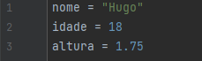
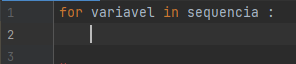
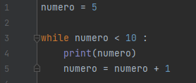

A linguagem de programação Python teve origens no final dos anos 1980 e início dos anos 1990. Seu desenvolvimento foi iniciado por Guido van Rossum, um programador holandês. Van Rossum trabalhava no Centrum Wiskunde & Informatica (CWI) na Holanda e começou a trabalhar na criação da linguagem como um projeto de hobby.
A primeira versão pública do Python, a versão 0.9.0, foi lançada em fevereiro de 1991. A linguagem foi projetada com o objetivo de ser fácil de ler e escrever, com uma sintaxe clara e expressiva. O nome "Python" foi escolhido em homenagem ao grupo de comédia britânico Monty Python, do qual Guido van Rossum era fã.
Algoritmos
Um algoritmo é um conjunto finito e ordenado de instruções ou regras bem definidas que levam à solução de um problema específico. Essas instruções descrevem um processo passo a passo que, se seguido corretamente, produzirá a saída desejada a partir de dados de entrada específicos.
Primeiro programa
System.out.println("") é um comando, também conhecido como função, que exibe algo para o cliente. Esse comando causa quebra de linha, ou seja, o próximo comando só será exibido na próxima linha. Para evitar essa quebra de linha, se pode usar o comando System.out.print("").
Variáveis
Em Python, a declaração de variáveis é bastante simples. Você não precisa especificar explicitamente o tipo de dado da variável ao declará-la, pois Python é uma linguagem de tipagem dinâmica. Aqui estão alguns exemplos de como declarar variáveis em Python:

Lendo dados do teclado
Para ler dados do teclado, basta utilizar o comando "input", porém, quando for ler algo diferente de String, deve-se especificar se é int (inteiro) ou float(número decimal)
Operadores matemáticos
Operador
Operação
Exemplo
+
Soma
2 + 2 = 4
-
Subtração
10 - 9 = 1
*
Multiplicação
2 * 2 = 4
/
Divisão
9 / 3 = 3
%
Módulo da divisão
4 % 2 = 0
Estrutura condicional
As estruturas condicionais em programação são usadas para tomar decisões com base em certas condições.
A declaração "if" é usada para executar um bloco de código se uma condição for verdadeira. A declaração "else" pode ser usada para fornecer um bloco de código a ser executado se a condição for falsa. E a declaração "elif" pode ser usada para verificar soluções encadeadas.
Operadores de comparação
"==" - Igual a
"!=" - Diferente de
">" - Maior que
"<" - Menor que
">=" - Maior ou igual que
"<=" - Menor ou igual que
IF com "and" e "or"
Utilizado para testar duas condições simultâneamente. Ao utilizar o and, as duas condições precisam ser verdadeiras para entrar na condição, já com o or apenas uma condição precisa ser verdadeira.
Laços de repetição
Existem várias formas de implementar estruturas de repetição (loops) para executar um bloco de código repetidamente até que uma condição seja atendida. Os loops mais comuns são o for e while. Aqui estão exemplos de cada um:
FOR
A estrutura de controle de repetição for é frequentemente utilizada para iterar sobre uma sequência (como uma lista, tupla, string ou range) ou outros objetos iteráveis. Aqui está a sintaxe básica da estrutura for em Python:

While
O loop while executa um bloco de código enquanto uma condição específica for verdadeira.

Conversa informal sobre como está a linguagem Phyton atualmente
Conclusão
Este é apenas o começo da sua trajetória para se tornar um programador habilidoso. Se você chegou até aqui, já não é mais um iniciante e está pronto para buscar novos desafios. Conheça nossos outros cursos :